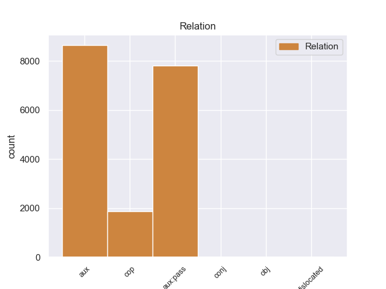
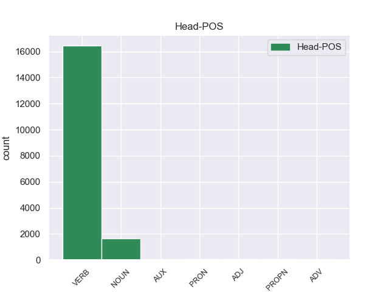
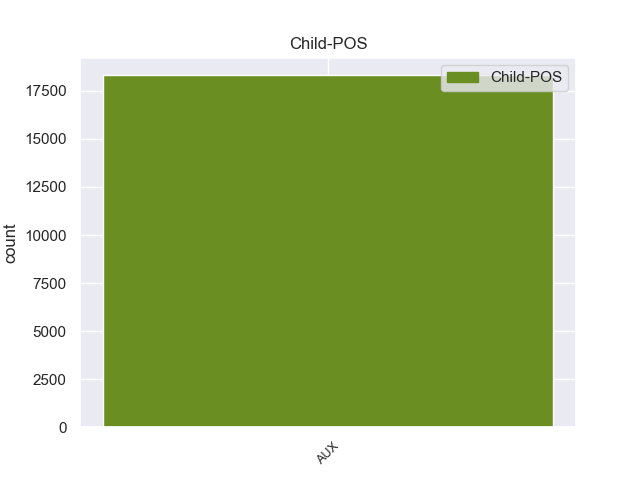

Distribution of features within this leaf



Agreement Rules sorted by frequency.
- When the dependent token is the auxiliary(aux) of the head token, and the dependent token is AUX.
1 दलाई _ _ _ _ 0 _ _ _
2 लामा _ _ _ _ 0 _ _ _
3 ने _ _ _ _ 0 _ _ _
4 भारत _ _ _ _ 0 _ _ _
5 और _ _ _ _ 0 _ _ _
6 चीन _ _ _ _ 0 _ _ _
7 के _ _ _ _ 0 _ _ _
8 रिश्ते _ _ _ _ 0 _ _ _
9 में _ _ _ _ 0 _ _ _
10 आ आ VERB VM Number=Sing|Person=3 0 _ _ _
11 रहे रह AUX VAUX Aspect=Perf|Gender=Masc|Number=Sing|Person=3|VerbForm=Part 10 aux _ ChunkId=VGNF|ChunkType=child|Tam=yA|Translit=rahe|Vib=या
12 सुधार _ _ _ _ 0 _ _ _
13 की _ _ _ _ 0 _ _ _
14 भी _ _ _ _ 0 _ _ _
15 प्रशंसा _ _ _ _ 0 _ _ _
16 की _ _ _ _ 0 _ _ _
17 । _ _ _ _ 0 _ _ _
1 उन्होंने _ _ _ _ 0 _ _ _
2 कहा _ _ _ _ 0 _ _ _
3 कि _ _ _ _ 0 _ _ _
4 चीन _ _ _ _ 0 _ _ _
5 तिब्बत _ _ _ _ 0 _ _ _
6 को _ _ _ _ 0 _ _ _
7 व्यापक _ _ _ _ 0 _ _ _
8 स्वायत्तता _ _ _ _ 0 _ _ _
9 देकर _ _ _ _ 0 _ _ _
10 इस _ _ _ _ 0 _ _ _
11 समस्या _ _ _ _ 0 _ _ _
12 के _ _ _ _ 0 _ _ _
13 समाधान _ _ _ _ 0 _ _ _
14 का _ _ _ _ 0 _ _ _
15 रास्ता _ _ _ _ 0 _ _ _
16 साफ _ _ _ _ 0 _ _ _
17 कर कर VERB VM Gender=Masc|Number=Sing|Person=3|Voice=Act 0 _ _ _
18 सकता _ _ _ _ 0 _ _ _
19 है है AUX VAUX Mood=Ind|Number=Sing|Person=3|Tense=Pres|VerbForm=Fin 17 aux:pass _ ChunkId=VGF2|ChunkType=child|Tam=hE|Translit=hai|Vib=है
20 । _ _ _ _ 0 _ _ _
1 उन्होंने _ _ _ _ 0 _ _ _
2 कहा _ _ _ _ 0 _ _ _
3 कि _ _ _ _ 0 _ _ _
4 भारत _ _ _ _ 0 _ _ _
5 और _ _ _ _ 0 _ _ _
6 चीन _ _ _ _ 0 _ _ _
7 सर्वाधिक _ _ _ _ 0 _ _ _
8 आबादी _ _ _ _ 0 _ _ _
9 वाले _ _ _ _ 0 _ _ _
10 देश देश NOUN NN Case=Nom|Gender=Masc|Number=Plur|Person=3 0 _ _ _
11 हैं है AUX VM Mood=Ind|Number=Plur|Person=3|Tense=Pres|VerbForm=Fin|Voice=Act 10 cop _ ChunkId=VGF2|ChunkType=head|Stype=declarative|Tam=hE|Translit=haiṁ|Vib=है
12 । _ _ _ _ 0 _ _ _
1 अदालत _ _ _ _ 0 _ _ _
2 में _ _ _ _ 0 _ _ _
3 जब _ _ _ _ 0 _ _ _
4 पूछताछ _ _ _ _ 0 _ _ _
5 हुई _ _ _ _ 0 _ _ _
6 , _ _ _ _ 0 _ _ _
7 तो _ _ _ _ 0 _ _ _
8 मुंशी _ _ _ _ 0 _ _ _
9 यह _ _ _ _ 0 _ _ _
10 कहते _ _ _ _ 0 _ _ _
11 हुए _ _ _ _ 0 _ _ _
12 मुकर _ _ _ _ 0 _ _ _
13 गया _ _ _ _ 0 _ _ _
14 था _ _ _ _ 0 _ _ _
15 कि _ _ _ _ 0 _ _ _
16 उसे _ _ _ _ 0 _ _ _
17 हिंदी _ _ _ _ 0 _ _ _
18 आती _ _ _ _ 0 _ _ _
19 ही _ _ _ _ 0 _ _ _
20 नहीं _ _ _ _ 0 _ _ _
21 , _ _ _ _ 0 _ _ _
22 तो _ _ _ _ 0 _ _ _
23 वह _ _ _ _ 0 _ _ _
24 हिंदी _ _ _ _ 0 _ _ _
25 में _ _ _ _ 0 _ _ _
26 कैसे _ _ _ _ 0 _ _ _
27 एफआईआर _ _ _ _ 0 _ _ _
28 लिख _ _ _ _ 0 _ _ _
29 या _ _ _ _ 0 _ _ _
30 लिखवा _ _ _ _ 0 _ _ _
31 सकता सक AUX VAUX Aspect=Imp|Gender=Masc|Number=Sing|VerbForm=Part 0 _ _ _
32 है है AUX VAUX Mood=Ind|Number=Sing|Person=3|Tense=Pres|VerbForm=Fin 31 conj _ ChunkId=FRAGP|ChunkType=head|Tam=hE|Translit=hai|Vib=है
33 । _ _ _ _ 0 _ _ _
1 आडवाणी _ _ _ _ 0 _ _ _
2 ने _ _ _ _ 0 _ _ _
3 कहा कह VERB VM Aspect=Perf|Gender=Masc|Number=Sing|VerbForm=Part|Voice=Act 0 _ _ _
4 कि _ _ _ _ 0 _ _ _
5 इस _ _ _ _ 0 _ _ _
6 अध्यादेश _ _ _ _ 0 _ _ _
7 का _ _ _ _ 0 _ _ _
8 उद्देश्य _ _ _ _ 0 _ _ _
9 सोनिया _ _ _ _ 0 _ _ _
10 को _ _ _ _ 0 _ _ _
11 बचाना _ _ _ _ 0 _ _ _
12 है है AUX VAUX Mood=Ind|Number=Sing|Person=3|Tense=Pres|VerbForm=Fin|Voice=Act 3 obj _ ChunkId=VGF2|ChunkType=head|Stype=declarative|Tam=hE|Translit=hai|Vib=है
13 । _ _ _ _ 0 _ _ _
1 इस _ _ _ _ 0 _ _ _
2 बीच _ _ _ _ 0 _ _ _
3 सूत्रों _ _ _ _ 0 _ _ _
4 ने _ _ _ _ 0 _ _ _
5 बताया _ _ _ _ 0 _ _ _
6 है _ _ _ _ 0 _ _ _
7 कि _ _ _ _ 0 _ _ _
8 भारतीय _ _ _ _ 0 _ _ _
9 क्रिकेट _ _ _ _ 0 _ _ _
10 कंट्रोल _ _ _ _ 0 _ _ _
11 बोर्ड _ _ _ _ 0 _ _ _
12 ने _ _ _ _ 0 _ _ _
13 चैपल _ _ _ _ 0 _ _ _
14 से _ _ _ _ 0 _ _ _
15 पूछा _ _ _ _ 0 _ _ _
16 है _ _ _ _ 0 _ _ _
17 कि _ _ _ _ 0 _ _ _
18 आखिर _ _ _ _ 0 _ _ _
19 हुआ हो VERB VM Aspect=Perf|Gender=Masc|Number=Sing|VerbForm=Part|Voice=Act 0 _ _ _
20 क्या _ _ _ _ 0 _ _ _
21 था था AUX VAUX Gender=Masc|Mood=Ind|Number=Sing|Tense=Past|VerbForm=Fin 19 dislocated _ ChunkId=FRAGP|ChunkType=head|Tam=WA|Translit=thā|Vib=था
22 । _ _ _ _ 0 _ _ _
Disagree Examples:
1 यहीं _ _ _ _ 0 _ _ _
2 पर _ _ _ _ 0 _ _ _
3 एक _ _ _ _ 0 _ _ _
4 कला _ _ _ _ 0 _ _ _
5 संग्रहालय संग्रहालय NOUN NN Case=Nom|Gender=Masc|Number=Sing|Person=3 0 _ _ _
6 , _ _ _ _ 0 _ _ _
7 कला _ _ _ _ 0 _ _ _
8 दीर्घा _ _ _ _ 0 _ _ _
9 , _ _ _ _ 0 _ _ _
10 फाइन _ _ _ _ 0 _ _ _
11 आर्ट _ _ _ _ 0 _ _ _
12 के _ _ _ _ 0 _ _ _
13 लिए _ _ _ _ 0 _ _ _
14 कार्यशाला _ _ _ _ 0 _ _ _
15 , _ _ _ _ 0 _ _ _
16 एक _ _ _ _ 0 _ _ _
17 थिएटर _ _ _ _ 0 _ _ _
18 , _ _ _ _ 0 _ _ _
19 अंतरंग _ _ _ _ 0 _ _ _
20 और _ _ _ _ 0 _ _ _
21 बहिरंग _ _ _ _ 0 _ _ _
22 ऑडिटोरियम _ _ _ _ 0 _ _ _
23 , _ _ _ _ 0 _ _ _
24 रिहर्सल _ _ _ _ 0 _ _ _
25 कक्ष _ _ _ _ 0 _ _ _
26 , _ _ _ _ 0 _ _ _
27 भारतीय _ _ _ _ 0 _ _ _
28 कविताओं _ _ _ _ 0 _ _ _
29 का _ _ _ _ 0 _ _ _
30 पुस्तकालय _ _ _ _ 0 _ _ _
31 , _ _ _ _ 0 _ _ _
32 शास्त्रीय _ _ _ _ 0 _ _ _
33 और _ _ _ _ 0 _ _ _
34 लोक _ _ _ _ 0 _ _ _
35 संगीत _ _ _ _ 0 _ _ _
36 संग्रहालय _ _ _ _ 0 _ _ _
37 भी _ _ _ _ 0 _ _ _
38 हैं है AUX VM Mood=Ind|Number=Plur|Person=3|Tense=Pres|VerbForm=Fin|Voice=Act 5 cop _ ChunkId=VGF|ChunkType=head|Stype=declarative|Tam=hE|Translit=haiṁ|Vib=है
39 । _ _ _ _ 0 _ _ _
1 यह _ _ _ _ 0 _ _ _
2 एक _ _ _ _ 0 _ _ _
3 प्रागैतिहासिक _ _ _ _ 0 _ _ _
4 स्थल _ _ _ _ 0 _ _ _
5 पर _ _ _ _ 0 _ _ _
6 है _ _ _ _ 0 _ _ _
7 और _ _ _ _ 0 _ _ _
8 विश्व _ _ _ _ 0 _ _ _
9 में _ _ _ _ 0 _ _ _
10 अपनी _ _ _ _ 0 _ _ _
11 तरह _ _ _ _ 0 _ _ _
12 का _ _ _ _ 0 _ _ _
13 एक _ _ _ _ 0 _ _ _
14 ही _ _ _ _ 0 _ _ _
15 संग्रहालय _ _ _ _ 0 _ _ _
16 है _ _ _ _ 0 _ _ _
17 जो _ _ _ _ 0 _ _ _
18 प्रागैतिहासिक _ _ _ _ 0 _ _ _
19 चित्रकला _ _ _ _ 0 _ _ _
20 से _ _ _ _ 0 _ _ _
21 सज्जित _ _ _ _ 0 _ _ _
22 गुफाओं गुफा NOUN NN Case=Acc|Gender=Fem|Number=Plur|Person=3 0 _ _ _
23 के _ _ _ _ 0 _ _ _
24 समीप _ _ _ _ 0 _ _ _
25 है है AUX VM Mood=Ind|Number=Sing|Person=3|Tense=Pres|VerbForm=Fin|Voice=Act 22 cop _ ChunkId=VGF3|ChunkType=head|Stype=declarative|Tam=hE|Translit=hai|Vib=है
26 । _ _ _ _ 0 _ _ _
1 99 _ _ _ _ 0 _ _ _
2 किमी. _ _ _ _ 0 _ _ _
3 पर _ _ _ _ 0 _ _ _
4 इंदौर _ _ _ _ 0 _ _ _
5 हवाई _ _ _ _ 0 _ _ _
6 अड्डा _ _ _ _ 0 _ _ _
7 सबसे सब PRON PRP Case=Nom|Number=Plur|Person=3|PronType=Prs 0 _ _ _
8 निकट _ _ _ _ 0 _ _ _
9 है है AUX VM Mood=Ind|Number=Sing|Person=3|Tense=Pres|VerbForm=Fin|Voice=Act 7 cop _ ChunkId=VGF|ChunkType=head|Stype=declarative|Tam=hE|Translit=hai|Vib=है
10 जो _ _ _ _ 0 _ _ _
11 मुंबई _ _ _ _ 0 _ _ _
12 , _ _ _ _ 0 _ _ _
13 दिल्ली _ _ _ _ 0 _ _ _
14 और _ _ _ _ 0 _ _ _
15 भोपाल _ _ _ _ 0 _ _ _
16 से _ _ _ _ 0 _ _ _
17 जुड़ा _ _ _ _ 0 _ _ _
18 है _ _ _ _ 0 _ _ _
19 । _ _ _ _ 0 _ _ _
1 यहाँ _ _ _ _ 0 _ _ _
2 बाघ _ _ _ _ 0 _ _ _
3 के _ _ _ _ 0 _ _ _
4 अलावा _ _ _ _ 0 _ _ _
5 तेंदुआ _ _ _ _ 0 _ _ _
6 , _ _ _ _ 0 _ _ _
7 हिरण _ _ _ _ 0 _ _ _
8 , _ _ _ _ 0 _ _ _
9 चीतल _ _ _ _ 0 _ _ _
10 , _ _ _ _ 0 _ _ _
11 नीलगाय _ _ _ _ 0 _ _ _
12 , _ _ _ _ 0 _ _ _
13 जंगली _ _ _ _ 0 _ _ _
14 सूअर _ _ _ _ 0 _ _ _
15 और _ _ _ _ 0 _ _ _
16 कई _ _ _ _ 0 _ _ _
17 तरह _ _ _ _ 0 _ _ _
18 के _ _ _ _ 0 _ _ _
19 पक्षी _ _ _ _ 0 _ _ _
20 बड़ी _ _ _ _ 0 _ _ _
21 संख्या संख्या NOUN NN Case=Acc|Gender=Fem|Number=Sing|Person=3 0 _ _ _
22 में _ _ _ _ 0 _ _ _
23 हैं है AUX VM Mood=Ind|Number=Plur|Person=3|Tense=Pres|VerbForm=Fin|Voice=Act 21 cop _ ChunkId=VGF|ChunkType=head|Stype=declarative|Tam=hE|Translit=haiṁ|Vib=है
24 । _ _ _ _ 0 _ _ _
1 लेकिन _ _ _ _ 0 _ _ _
2 यहाँ _ _ _ _ 0 _ _ _
3 की _ _ _ _ 0 _ _ _
4 पुरानी _ _ _ _ 0 _ _ _
5 दीवारों _ _ _ _ 0 _ _ _
6 में _ _ _ _ 0 _ _ _
7 इतिहास _ _ _ _ 0 _ _ _
8 के _ _ _ _ 0 _ _ _
9 कई _ _ _ _ 0 _ _ _
10 राज _ _ _ _ 0 _ _ _
11 कैद कैद NOUN NN Case=Nom|Gender=Fem|Number=Sing|Person=3 0 _ _ _
12 हैं है AUX VM Mood=Ind|Number=Plur|Person=3|Tense=Pres|VerbForm=Fin|Voice=Act 11 cop _ ChunkId=VGF|ChunkType=head|SpaceAfter=No|Stype=declarative|Tam=hE|Translit=haiṁ|Vib=है
13 . _ _ _ _ 0 _ _ _